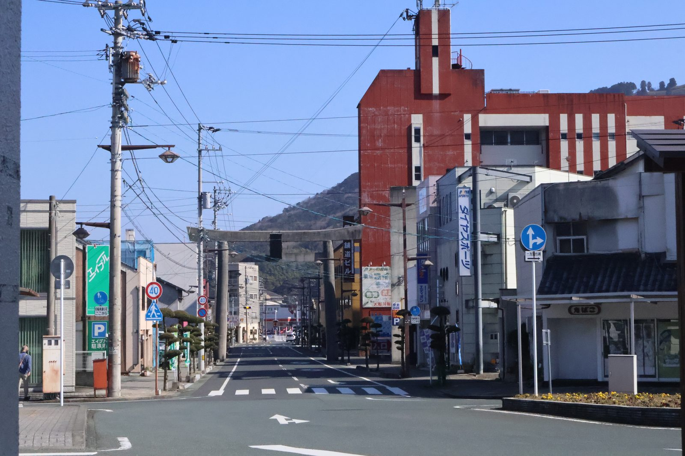

大洲の暮らし ・ 出典: 大洲市役所 ・ 約5分で読める

要点
大洲市が令和３年に実施した市民アンケートに、設問６「世帯の年収（令和２年中）」という項目がある。
調査は20歳以上の市民を無作為抽出して郵送で実施。配布3,994票に対し1,786票が回収されている（回収率44.7％）。
結果がこれだ。
| 世帯年収 | 割合 | 人数（概算） |
|---|---|---|
| 200万円未満 | 25.6％ | 約457人 |
| 200万～400万円未満 | 33.8％ | 約604人 |
| 400万～600万円未満 | 15.2％ | 約272人 |
| 600万～1,000万円未満 | 10.5％ | 約188人 |
| 1,000万円以上 | 2.7％ | 約48人 |
| 回答したくない | 8.2％ | 約146人 |
| 無回答 | 4.0％ | 約71人 |
200万円未満が25.6％。回答した1,786人のうち、およそ457人にあたる。おおよそ４人に１人だ。
200万円未満と200万～400万円未満を足すと59.4％。
約1,061人。回答者の６割近くが、世帯年収400万円未満と答えている。
なお「回答したくない」8.2％と「無回答」4.0％を除いて、金額を答えた人だけを分母にすると、割合はさらに上がる。
200万円未満が29.2％、400万円未満が67.7％だ。金額を答えた人の３人に２人が400万円未満、ということになる。
この数字は「低い」のか。比べる相手が要る。ちょうど年次がぴったり合う全国調査があった。
厚生労働省の「2021（令和３）年 国民生活基礎調査」だ。この調査が聞いているのは令和２年の所得で、大洲市のアンケートの設問６とまったく同じ年である。 全国の結果はこうなっている。
全国の階級別を足し上げると、200万円未満は18.5％、400万円未満は45.2％になる。並べるとこうだ。
差は小さくない。400万円未満の割合は、全国45.2％に対して大洲は59.4％。14ポイント以上高い。
200万円未満で見ても、全国18.5％に対して大洲25.6％で７ポイント高い。
「４人に１人」という数字は、全国では「５人に１人弱」だということになる。
ここは正直に書かないといけない。この２つの調査は、性格がかなり違う。
１つ目。調べている単位が違う。国民生活基礎調査は世帯を対象にした国の基幹統計で、所得票にもとづく。
大洲市のアンケートは20歳以上の個人を無作為抽出して、その人に世帯の年収を答えてもらう形式だ。世帯単位の集計ではない。
２つ目。回答者が高齢に偏っている。同じアンケートの回答者の年齢構成を見ると、70～74歳が19.4％、75歳以上が16.9％で、70歳以上だけで36.3％を占めている。
全国の年齢構成より明らかに高齢寄りだ。そして全国調査では高齢者世帯の平均所得は332万９千円で、高齢者世帯以外（685万９千円）の半分以下しかない。
回答者の３人に１人以上が70歳以上なら、世帯年収が低く出るのは統計的に当然の結果ということになる。この点は同じアンケートの健康意識の記事でも触れた通りだ。
３つ目。回収率は44.7％で、返さなかった55.3％がどんな層かは分からない。
だから「大洲市民の６割が年収400万円未満」と言い切るのは正確ではない。
正しくは「このアンケートに答えた市民の６割が、世帯年収400万円未満と答えた」だ。
それでも、高齢に偏っているという説明そのものが大洲の人口構成を反映してもいるので、方向としては実態に近いとは思う。
設問の正式名称は「世帯の年収（令和２年中）」。令和３年５～６月に実施された調査で、前年１年間の世帯の年収をたずねている。
年金を含むかどうかについては、報告書を確認した限り、明確に定義した記載は見当たらなかった。これは正直に書いておく。
ただし、この種の調査で「世帯の年収」と言えば、同じ世帯に住む家族全員分の、税金や社会保険料を引く前の年間の合計収入を指すのが通例だ。
給与だけでなく、年金・事業収入・不動産収入なども含めた世帯全体の総収入という理解でよさそうだ。
参考までに、比較に使った国民生活基礎調査のほうは定義が明確で、公的年金・恩給は当然に所得に含まれる。
そちらで高齢者世帯の平均が332万９千円と出ているのは、年金収入を数えたうえでの金額である。
つまり「年金も含めての200万円未満」と読むのが自然だ。年金を除いた勤労収入だけの話ではない。
同じアンケートの別の設問を並べると、理由がかなりはっきりする。
単身と夫婦のみを足すと52.9％。回答者の半分以上が、１人か２人で暮らしている。世帯年収は世帯の合計なので、働き手の人数がそのまま効く。
３世代同居で３人が働いている世帯と、年金だけの夫婦世帯では、同じ暮らしぶりでも金額がまるで違う。
背景には人口構成がある。大洲市の高齢化率は令和２年時点で37.4％だ（大洲市過疎地域持続的発展計画）。
全国の高齢者世帯の割合は同じ2021年調査で29.0％なので、大洲のほうがはっきり高い。
高齢の単身・夫婦世帯が多い町では、世帯年収の分布が低いほうに寄る。
これは貧困の話とは別に、まず構造の話として押さえておきたい。
「世帯年収400万円未満が６割」という数字だけが独り歩きすると、実態を見誤ると思う。
年金生活の高齢者が多いという人口構成を踏まえれば、これは「貧しさ」というより「暮らし方」の違いに近い部分がある。
とはいえ、全国と比べて400万円未満が14ポイント以上多いのも事実で、単身高齢世帯が２割を超えているのも事実だ。
医療費の負担、灯油代、車の維持費。固定費が同じようにかかる暮らしの中で、この分布がどう効くのか。
今後の福祉や交通の施策を考えるうえで、無視できない数字だと感じた。
この記事をサイトに掲載した日: 2026/08/18